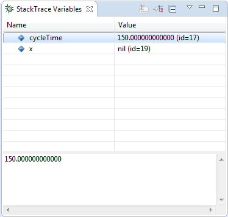

The StackTrace Variables view is normally part of the StackTrace window, which is shown if an error occurs while debugging a model. It shows all parameters and variables that are accessible by the selected stackframe in the StackTrace view. The displayed values are computed using the corresponding data method printString. When selecting a variable in the Stack Variables view, the value is expanded recursively with its internal variables.
